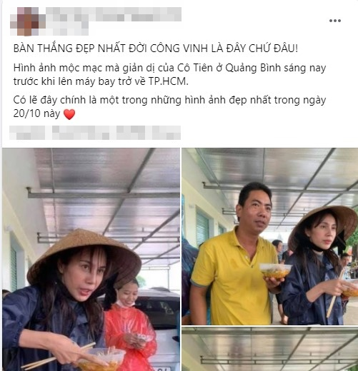

Hình ảnh Thủy Tiên ăn mì giữa lũ khiến dân mạng xúc động
TIN LIÊN QUAN
- Yêu 6 năm cưới 5 ngày thì chồng thú nhận có con với người khác
- Âu Hà My ủng hộ miền Trung 100 triệu sau hơn 1 tháng ở ẩn
- Kỳ Duyên cứu trợ miền Trung nhưng bị mất cả trăm triệu vì hỏng hết hàng
Trên một diễn đàn mạng xã hội mới đây đã chia sẻ một số hình ảnh Thủy Tiên ăn mì giữa lũ khiến fan hâm mộ rưng rưng. Được biết, lúc này nữ ca sĩ đang có mặt ở Quảng Bình để thực hiện công tác cứu trợ tiền và nhu yếu phẩm cho bà con gặp khó khăn, thiệt hại nhà cửa hoa màu trong đợt thiên tai này.
Nhìn những bức hình, có thể thấy Thủy Tiên trông tiều tụy, mệt mỏi nhiều, thân hình gầy đi trông thấy. Bà xã Công Vinh vừa đứng vừa ăn bữa sáng khiến người hâm mộ không khỏi thương xót. Nhiều người còn nói rằng hình ảnh Thủy Tiên ăn mì giữa lũ là bàn thắng đẹp nhất đời Công Vinh.

Chiều tối ngày hôm qua, Thủy Tiên đã quay trở về Sài Gòn để giải quyết những công việc còn tồn đọng. Dù đã kiệt sức sau gần một tuần dầm mưa, nhưng Thủy Tiên hứa rằng, cô sẽ thu xếp công việc của mình nhanh nhất để trở lại vùng lũ trong một vài ngày tới để giúp đỡ bà con.
Còn nhớ trước đây, khi đi từ thiện ở miền Tây trong đợt hạn hán kéo dài, Thủy Tiên cũng ăn vội bát mì trong lúc đi khảo sát. Lúc đó, ông xã ân cần hỏi 'Có mệt không Tiên?', Thủy Tiên liền tỏ ra hạnh phúc trả lời: "Vinh có mệt không? Tiên không mệt!".